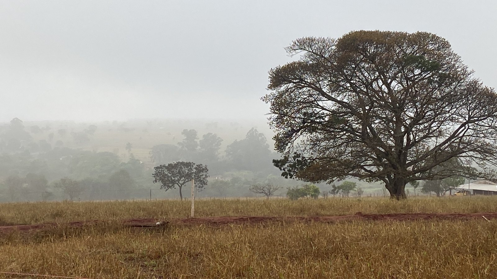
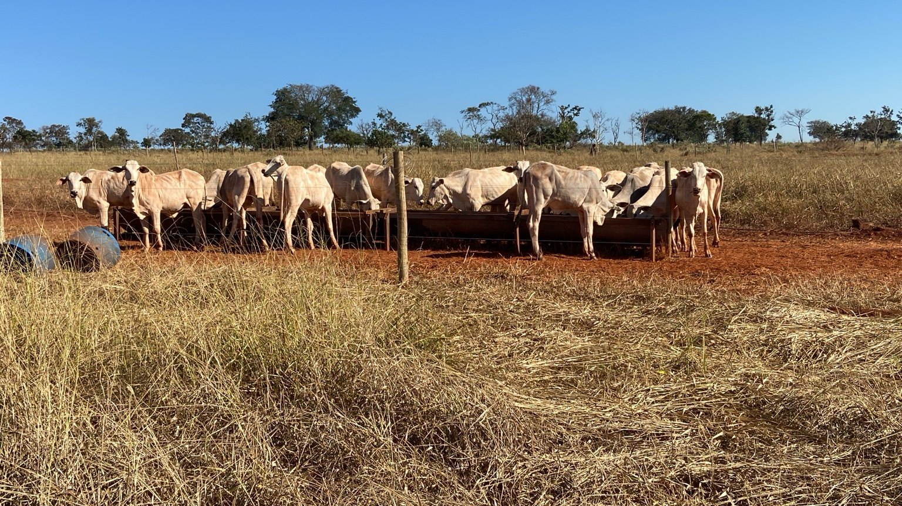
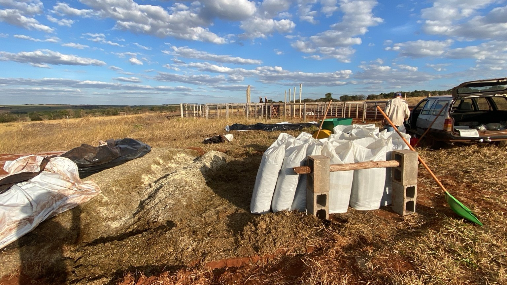
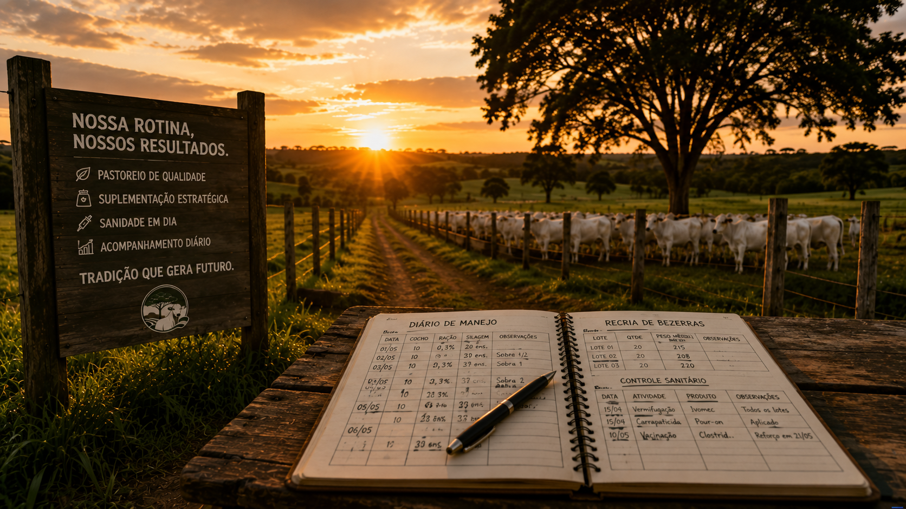

Produzir
Alimento de qualidade com responsabilidade, eficiência e melhoria contínua.
Agricultura Familiar Uberlândia – MG
Agricultura familiar especializada em recria de bezerras e produção de silagem no Cerrado Mineiro.

NOSSA HISTÓRIA
Há mais de 30 anos, nossa família encontrou no Cerrado Mineiro não apenas uma terra para trabalhar, mas um lugar para construir um futuro.
O que começou com a produção de leite evoluiu para um novo ciclo dedicado à recria de bezerras, à produção própria de silagem e ao compartilhamento de conhecimento.
O legado não começou conosco. Apenas escolhemos dar continuidade.
NOSSA VOCAÇÃO
É sobre cuidar hoje para colher um amanhã melhor.
Alimento de qualidade com responsabilidade, eficiência e melhoria contínua.
Animais com manejo responsável, nutrição adequada e atenção ao bem-estar.
Experiências e aprendizados para fortalecer a pecuária e a agricultura familiar.
Nossa Produção
Trabalhamos com recria de bezerras em sistema a pasto, com suplementação estratégica e manejo voltado ao desenvolvimento saudável dos animais.
Manejo cuidadoso e atenção constante aos animais.
Pastagem e suplementação de acordo com cada fase.
Acompanhamento do desenvolvimento do rebanho.
Foco em ganho de peso, saúde e qualidade.


Produção
Produzimos silagem com foco em qualidade, conservação e disponibilidade de alimento para os animais ao longo do ano.
Combinação voltada à produção de volumoso de qualidade.
Acompanhamento desde o cultivo até o armazenamento.
Cuidado no corte, processamento e conservação da silagem.
Produção destinada ao consumo próprio e comercialização.
Conexão
Acompanhe um pouco da nossa rotina, do manejo dos animais e da produção na Agropecuária Cerrado.

FALE COM A GENTE
Para recria de bezerras ou aquisição de silagem, fale diretamente conosco.